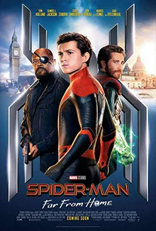
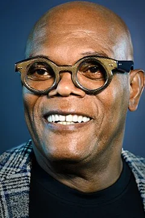
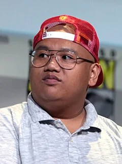
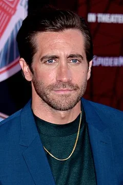

Spider-Man: Far From Home (2019)
| Movie | Release Date | Poster |
|---|---|---|
| Spider-Man: Far From Home PG-13 · 2h 9m · action · adventure · science fiction |  |
| Trailer |
|---|
| Rotten Tomatoes | Metacritic | IMDb |
|---|---|---|
| 91% | 69/100 | View on IMDb |
| Overview |
|---|
Spider-Man: Far From Home is a 2019 American superhero film based on the Marvel Comics character Spider-Man. Produced by Columbia Pictures, Marvel Studios, and Pascal Pictures, and distributed by Sony Pictures Releasing, it is the sequel to Spider-Man: Homecoming (2017) and the 23rd film in the Marvel Cinematic Universe (MCU). The film was directed by Jon Watts, written by Chris McKenna and Erik Sommers, and stars Tom Holland as Peter Parker / Spider-Man alongside Samuel L. Jackson, Zendaya, Cobie Smulders, Jon Favreau, J. B. Smoove, Jacob Batalon, Martin Starr, Tony Revolori, Marisa Tomei, and Jake Gyllenhaal. In the film, Peter is recruited by Nick Fury (Jackson) and Mysterio (Gyllenhaal) to help stop the Elementals while he is on a school trip to Europe. Full plot (spoilers)In Ixtenco , Mexico, Nick Fury and Maria Hill investigate an unnatural storm and encounter the Earth Elemental . Quentin Beck , a super-powered individual, arrives and defeats the creature. Fury and Hill subsequently recruit him. In New York City, the Midtown School of Science and Technology completes its year, which was restarted to accommodate the students who disintegrated five years earlier due to Thanos 's actions; they had reappeared un-aged , thanks to the actions of the Avengers . The school organizes a two-week summer field trip to Europe, where Peter Parker —who is still mourning the death of his mentor Tony Stark —plans to reveal to classmate MJ his attraction to her. Happy Hogan informs Peter that Fury intends to contact him, but Peter ignores Fury's phone call. Peter and his classmates travel to Venice , Italy, where the Water Elemental attacks. While Peter helps protect his classmates, Beck arrives and defeats the creature. Fury meets with Peter and gives him Stark's eyeglasses . The glasses enable him to communicate with and take command of the artificial intelligence E.D.I.T.H. , which has access to Stark Industries ' databases and commands a large orbital weapons supply . Beck claims to have entered from an alternate reality within the multiverse , where the four Elementals killed his family and destroyed his civilization. With only the Fire Elemental left to destroy, Beck predicts it will attack Prague , Czech Republic. Peter declines Fury's invitation to join the fight and returns to his class trip, but Fury secretly changes the class's itinerary to divert the students to Prague. Peter is forced to help Beck fight the Fire Elemental to again protect his friends. Beck manages to destroy the creature with Peter's help. Fury and Hill invite Peter and Beck to Berlin , Germany to discuss forming a new superhero team, but Peter decides that Beck should go alone and transfers control of E.D.I.T.H. to him. Once Peter leaves, Beck celebrates alongside ex-Stark Industries employees, with whom he had been working to masquerade as a superhero. Beck, who was fired from his position as Stark's holographic-illusions specialist due to his unstable nature, uses advanced projectors to simulate his powers and the Elementals. He plans to use E.D.I.T.H.'s orbital weaponized drones to increase the scale of his illusions and fraudulently establish himself as an Avenger-level hero. After MJ tells Peter she knows he is Spider-Man, they discover that a piece of debris she retrieved during the battle with the Fire Elemental is a projector and the pair realize Beck's deception. Peter travels to Berlin, to warn Fury, but Beck tricks him with an elaborate illusion, forcing him to reveal the names of his friends who know about Beck's plan, and causing Peter to get hit by a train. Beck is unaware that Peter, though injured, has survived. In the Netherlands, Peter contacts Hogan, who flies him to London, England, where his classmates are. Beck uses E.D.I.T.H. to orchestrate a fusion of all the Elementals. He intends to kill Peter's friends during the staged attack, as Beck is concerned that they will expose him with their knowledge. Peter disrupts the illusions and an enraged Beck attacks him with drones. Peter regains control of E.D.I.T.H. and defeats Beck, who is hit by a misfired gunshot from one of the drones. Before he dies, Beck tells his associate William Ginter Riva to retrieve data from the drones. After returning to New York City, Peter begins a relationship with MJ. In a mid-credits scene , J. Jonah Jameson of TheDailyBugle.net broadcasts doctored footage of the London incident in which Beck frames Spider-Man for the drone attack and his death before exposing Spider-Man's secret identity to the world, much to Peter's shock. In a post-credits scene, Fury and Hill are revealed to be the Skrulls Talos and Soren in disguise, under orders from the real Fury while he is away in space commanding a group of Skrulls. |
| Actor | Character | Photo |
|---|---|---|
| Tom Holland | Peter Parker / Spider-Man A high-school junior and Avenger who received spider-like abilities after being bitten by a radioactive spider. | |
| Samuel L. Jackson | Nick Fury The former director of S.H.I.E.L.D. |  |
| Zendaya | MJ Peter's classmate and love interest. |  |
| Cobie Smulders | Maria Hill A former high-ranking S.H.I.E.L.D. | |
| Jon Favreau | Happy Hogan The head of security for Stark Industries and former driver and bodyguard of Tony Stark who looks after Peter. |  |
| J. B. Smoove | Julius Dell Peter's teacher and a chaperone on his school trip to Europe. | |
| Jacob Batalon | Ned Leeds Peter's best friend. |  |
| Martin Starr | Roger Harrington Peter's academic decathlon teacher and a chaperone on his school trip to Europe. | |
| Tony Revolori | Eugene "Flash" Thompson Peter's rival. | |
| Marisa Tomei | May Parker Peter's aunt who is aware of his secret identity and wants him to be Spider-Man more so he can help with charitable causes. |  |
| Jake Gyllenhaal | Quentin Beck / Mysterio A former Stark Industries employee and holographic-illusions specialist who masquerades as a superhero from Earth-833 in the multiverse . |  |
| Angourie Rice | Betty Brant / Betty Brant | No photo |
| Remy Hii | Brad Davis / Brad Davis | No photo |
| Jorge Lendeborg Jr. | Jason Ionello / Jason Ionello | No photo |
| Numan Acar | Dimitri Smerdyakov / Dimitri | No photo |
| Zach Barack | Zach Cooper / Zach | No photo |
| Zoha Rahman | Zoha / Zoha | No photo |
| Yasmin Mwanza | Yasmin Monette / Yasmin | No photo |
| Joshua Sinclair-Evans | Josh Scarino / Josh | No photo |
| Tyler Luke Cunningham | Tyler Corbyn / Tyler | No photo |
| Sebastian Viveros | Sebastian / Sebastian | No photo |
| Toni Garrn | The Seamstress | No photo |
| Peter Billingsley | William Ginter Riva / William Ginter Riva | No photo |
| Clare Dunne | Victoria Snow / Victoria | No photo |
| Nicholas Gleaves | Guterman / Guterman | No photo |
| Claire Rushbrook | Janice Lincoln / Janice | No photo |
| J. K. Simmons | J. Jonah Jameson / J. Jonah Jameson | No photo |
| Jeroen van Koningsbrugge | Dutch Soccer Hooligan | No photo |
| Michael de Roos | Dutch Soccer Hooligan | No photo |
| Jan Paul Buijs | Dutch Soccer Hooligan | No photo |
| Sergio Pierattini | Venetian Glassblower | No photo |
| Anjana Vasan | Queens Reporter | No photo |
| Brian Law | Queens Reporter | No photo |
| Evelyn Mok | Queens Reporter | No photo |
| Tatiana Lunardon | Italian TV Newsreader | No photo |
| Giada Benedetti | Italian Customs Officer | No photo |
| Lukáš Bech | Helpful Dutch Man | No photo |
| Alessandro Giuggioli | Italian Street Vendor | No photo |
| Petr Opava | Opera Singer | No photo |
| Giuseppe Andriolo | Caricaturist | No photo |
| Pat Kiernan | self / Himself | No photo |
| Ben Mendelsohn | Talos | No photo |
| Sharon Blynn | Soren | No photo |
| Michal Kubal | – | No photo |
| Robert Downey Jr. | – | No photo |
| Dawn Michelle King | E.D.I.T.H. / E.D.I.T.H. | No photo |
| Detail | Value |
|---|---|
| Directed by | Jon Watts |
| Written by | Chris McKenna, Erik Sommers |
| Produced by | Kevin Feige, Amy Pascal |
| Music by | Michael Giacchino |
| Cinematography | Matthew J. Lloyd |
| Edited by | Dan Lebental, Leigh Folsom Boyd |
| Production companies | Marvel Studios, Sony Pictures, Columbia Pictures |
| Distributed by | Sony Pictures Releasing France, InterCom, Disney+ |
| Running time | 129 minutes |
| MPAA rating | PG-13 |
| Budget | $160 million |
| Box office | $1.1 billion |
Overview, plot, and cast descriptions are from Wikipedia (CC BY-SA 4.0). Credits, ratings, and box office are from Wikidata.